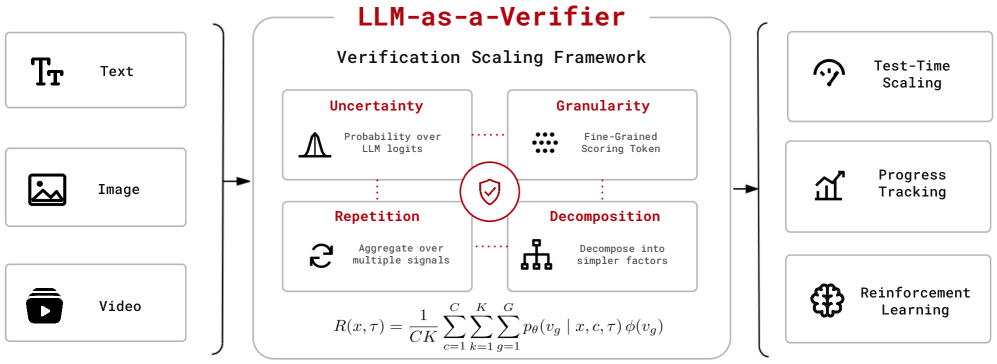
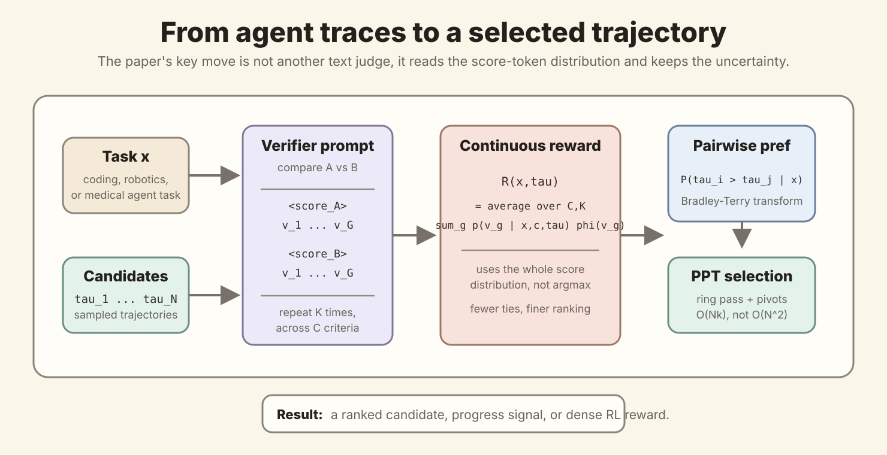
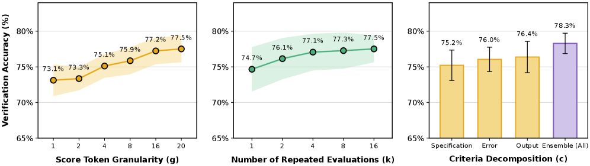
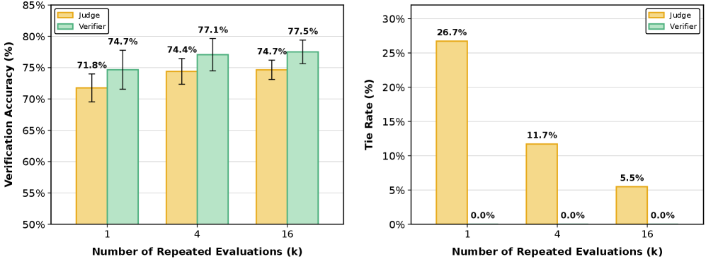
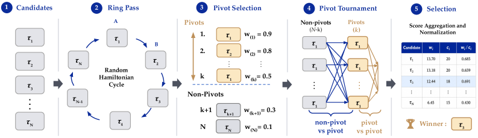
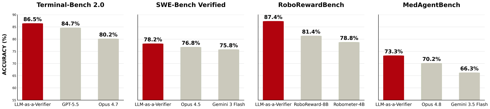
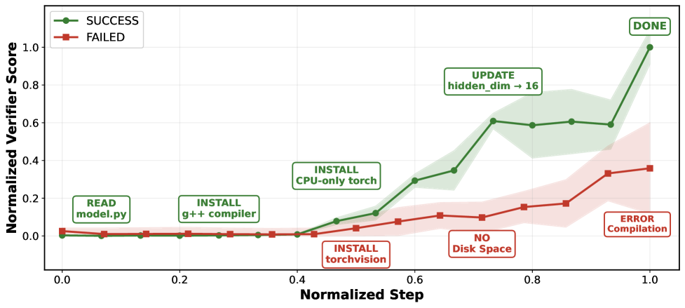
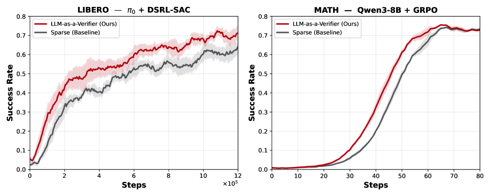

LLM-as-a-Verifier：把“评测”从离散打分变成可扩展的连续验证信号
- Paper: LLM-as-a-Verifier: A General-Purpose Verification Framework
- Authors: Jacky Kwok, Shulu Li, Pranav Atreya, Yuejiang Liu, Yixing Jiang, Chelsea Finn, Marco Pavone, Ion Stoica, Azalia Mirhoseini
- Affiliations: Stanford University, UC Berkeley, NVIDIA Research
- Version: arXiv v2, 2026-07-07
- Code / project: project page, GitHub
- 原文体量: 31 页，PDF 文本约 13,941 words
- 关键词: verification scaling, scoring token logits, continuous reward, Probabilistic Pivot Tournament, trajectory reward model, progress tracking, dense RL reward
读法：给人和 agent 的路标
这篇论文的中心不是“又做了一个 LLM-as-judge”，而是提出一个更细的判断：verification 本身可以像 pre-training、post-training、test-time compute 一样被 scale。作者认为普通 judge 最大的问题是把模型对分数 token 的分布压成一个离散 token，比如 1 到 5 分里的某个整数，于是大量复杂 trajectory 被打成同分，比较时出现 ties。LLM-as-a-Verifier 则读取 scoring token logits 的完整分布，计算期望分数，得到连续 reward。
最自然的阅读顺序是：
先看 Fig.2: 这套 verifier 到底接什么输入、输出什么信号
-> 再看 Eq.3.1: 离散 judge 如何变成连续 reward
-> 看 Fig.4 和 Fig.7: granularity、repetition、decomposition 为什么有效
-> 看 Fig.6: 怎么在 best-of-N 里省掉 O(N^2) pairwise 比较
-> 看 Table 3 / Fig.1: 四个 domain 上到底涨了多少
-> 最后看 Fig.8 / Fig.9: verifier signal 能不能当 progress 和 RL reward
给以后检索，关键词是：LLM-as-a-Verifier、verification scaling、score-token logits、continuous verifier score、Probabilistic Pivot Tournament、PPT、trajectory reward model、Value-Order Correlation、dense verifier reward。

图 2 说明：这张图给出全文总框架，先看它可以避免把论文误读成单纯的 judge prompt trick。
- 输入不是只有文本答案：框架把 coding trajectory、robot video rollout、medical tool-use trace 都抽象成待验证的
trajectory，所以它关心的是“过程是否可靠”，不只是最终一句 answer。 - 核心信号来自 scoring-token logits：verifier 在打分 token 位置读取完整概率分布，再把它转成连续 reward。这个步骤是整篇论文区别于普通 LLM-as-judge 的关键。
- 三个 scaling 旋钮在图中是并列的：score granularity 提高分辨率，repeated evaluation 降低方差，criteria decomposition 降低复合判断的 prompt bias。
- 输出有三种用途：test-time candidate selection、progress tracking、RL dense reward。后两者说明 verifier 不只是“评测结束时打个分”，而是可以进入 agent 运行过程。
- 一句话总结：这张图把本文的野心说清楚了，作者想把 verification 做成 agent 系统的一层通用基础设施。
一句话判断
这篇的贡献是把 agent 评测里的“judge 给一个分数”改成“verifier 输出一个可校准、可重复、可分解、可用于排序和训练的连续信号”。如果这个方向成立，agent 系统里最贵的东西不只是更强 generator，而是一个能在候选轨迹之间稳定分辨“哪个真的更接近完成任务”的 verifier。
My read is, 这篇很值得精读，因为它和我们最近看的 Anthropic agent evals、AutomationBench、AutoBench Agentic-1 都在说同一件事：agent scaling 的下一块短板是 verification。但是它也有明显边界：主方法依赖 scoring-token logits，很多 frontier API 不开放；benchmark 提升来自 best-of-N candidate selection，背后有额外推理和验证成本；医疗和机器人结果还远不是生产安全证明。
图表优先读法
| 先看 | 图 / 表 | 读完应该抓住什么 |
|---|---|---|
| 1 | Fig.2 framework | 论文把 text/image/video trajectory 都放进同一个 verifier 框架，输出 test-time scaling、progress tracking 和 RL reward |
| 2 | 自制 score pipeline | 核心机制是从 score-token distribution 算连续 reward，再转成 pairwise preference |
| 3 | Fig.4 verification scaling | 三个旋钮分别是 granularity、repetition、criteria decomposition，确实在 Terminal-Bench pairwise verification 上带来增益 |
| 4 | Fig.6 Probabilistic Pivot Tournament | best-of-N 不能全量 O(N^2) 比较，PPT 用 ring pass + pivot 把成本压到 O(Nk) |
| 5 | Fig.1 / Table 3 | 四个 benchmark 的 headline 数字不错，但要看它相对 Pass@1 和 oracle Pass@N 的位置 |
| 6 | Fig.8 / Fig.9 | verifier score 不只是 ranker，还被用作 progress signal 和 RL dense reward |
1. 它到底想解决什么问题
这篇要解决的问题是：agent 生成能力越来越强，但我们选择、监控、训练这些生成结果的 verifier 还太粗。
在 agent 场景里，模型经常会一次任务生成多条 trajectory。比如 coding agent 可以多跑几次 patch，机器人可以多条 rollout，医疗 agent 可以多条检索和决策路径。理论上，只要其中一条对了，best-of-N 就有很大 headroom；但实际系统需要一个 verifier 把正确 trajectory 挑出来。
作者在 Terminal-Bench V2 上展示了这个 headroom：如果有 oracle verifier，从 leaderboard 里 pooling trajectories 后，coverage 可以到 98.9%。这说明很多任务不是完全没人能做出来，而是“做出来了但系统不知道哪条是对的”。

图 5 说明：这张图说明 best-of-N 的潜力很大，但前提是有足够强的 verifier。
- 横轴是采样或候选池规模：随着每个任务采更多 trajectory，oracle 可以从里面挑出正确结果，成功率持续上升。
- 98.9% 是 oracle 上限，不是实际系统分数：它告诉我们候选池里经常已经有正确 trajectory，但普通系统没有可靠办法选出来。
- 这也是本文的动机：如果 generator 已经偶尔能做对，下一步提升来自 verifier，而不是盲目继续增大 sampling。
- 注意成本含义：oracle Pass@K 越高，越说明 search space 里有答案；但真实系统还要付出生成 K 条和验证 K 条的成本。
这里的关键区分是：
- Generator scaling：让模型更可能生成一个好答案。
- Verifier scaling：当候选答案已经存在时，更可靠地找出好答案。
My analysis is that, 这篇的价值正在第二点。很多 agent 论文容易只盯 generator，但真实系统会越来越像 search / sampling / agent harness / verifier 的组合。Verifier 不够细，best-of-N 就只是浪费 token。
2. 核心方法：从离散 judge 到连续 verifier
普通 LLM-as-judge 往往让模型输出一个离散分数，比如 1 到 5。问题是模型内部也许知道 A 比 B 略好，但最终吐出来都可能是 5，于是比较时同分。论文在 query-optimize case 里展示得很清楚：离散 1 到 5 judge 在 100 次重复评估里 88/100 都打成 tie；连续 expectation 后，tie 变成 0。
论文的核心技术 move 是：不要取 argmax score token，而是读取所有 scoring token 的概率分布，并对分数 token 的数值映射取期望。
给定任务 x、trajectory τ、评价标准 c、重复次数 K 和分数 token 集合 V_score = {v_1, ..., v_G}，作者定义：
其中：
C是 criteria 数量，例如 specification、output、error。K是 repeated verification 次数，用来平均噪声。G是 score token granularity，例如 1、2、4、8、16、20 个 scoring tokens。p_theta(v_g | x,c,tau)是 verifier model 给 score tokenv_g的概率。phi(v_g)把 score token 映射成标量分数。
之后把 reward 归一化到 \left[0,1\right]，再用 Bradley-Terry 形式变成 pairwise preference：
这个公式的意义很直接：如果 τ_i 的 continuous reward 比 τ_j 高，它赢的概率就更高；差距越大，偏好越强。
论文里的 verifier prompt 骨架大致是：
You are an expert [domain] reviewer.
You will see a task description and two trajectories.
Evaluation Criteria: [domain specific criteria]
Task: {task prompt}
Trajectory A: {A}
Trajectory B: {B}
Carefully analyze each trajectory, then provide your final scores:
<score_A> INTEGER_1_TO_20 </score_A>
<score_B> INTEGER_1_TO_20 </score_B>
Rating Rules: Rate correctness on a 1-20 scale based on evaluation criteria
(1 = incorrect, 10 = borderline, 20 = correct).
这个 prompt 本身并不神奇，真正重要的是不直接相信最终输出的整数。作者读取 <score_A> 和 <score_B> 位置的 token logprobs，把多个可能分数的概率质量都保留下来。论文还提到实际实现会用 letter-based scale 来方便 logprob extraction，避免数字 tokenization 造成额外麻烦。

这张自制图是我对方法的压缩：
- 输入 是一个 task
x和N条候选 trajectory。 - Verifier prompt 成对比较 A/B，并在
<score_A>、<score_B>位置读取 scoring token logits。 - Continuous reward 对 score token distribution 取期望，而不是取最高概率 token。
- Pairwise preference 用 Bradley-Terry 把 reward 差转成软胜率。
- PPT selection 用预算友好的 tournament 选出最终 trajectory。
3. 三个 verification scaling 旋钮
论文把 verifier scaling 拆成三个维度：score granularity、repeated evaluation、criteria decomposition。这不是泛泛而谈，Fig.4 在 Terminal-Bench V2 上做了 controlled analysis。

图 4 说明：这张图把 verifier scaling 拆成三个可调预算旋钮，而不是只说“多问几遍模型”。
- Granularity：从
G=1到G=20，pairwise verification accuracy 从 73.1% 到 77.5%，说明更细的 score token 空间能让模型表达“略好/明显好”的区别。 - Repetition：从
K=1到K=16，accuracy 从 74.7% 到 77.5%，主要是在平均单次 verifier pass 的噪声。 - Criteria decomposition：单独看 specification/output/errors 都只有 75.2% 到 76.4%，合并后到 78.3%，说明拆 rubric 的价值来自互补信息。
- 一句话总结：这三件事分别解决分辨率、方差、复合判断偏差，应该按 latency/cost budget 一起调。
3.1 Score token granularity
把 scoring token 从粗粒度扩大到更细粒度，pairwise verification accuracy 从 73.1% 到 77.5%。作者的解释是，更多 score tokens 不给模型新信息，但给模型一个更细的投影空间，让内部 belief 不必都被四舍五入成同一个整数。
论文还用 signal-to-noise ratio 解释这个现象：G=1 到 G=20 时，SNR 从 0.775 到 0.799，对应更稳定地区分 correct 和 incorrect trajectories。
3.2 Repeated evaluation
重复评估解决的是单次 verifier pass 的方差。K=1 到 K=16 时，accuracy 从 74.7% 到 77.5%。作者也承认边际收益递减，因为 harder examples 上存在 correlated bias，重复同一个偏见不会神奇消失。
3.3 Criteria decomposition
单个 rubric 容易太混，比如“这个 trajectory 是否正确”同时混了任务要求、输出格式、日志错误等。论文把 code-agent correctness 拆成三个 criterion：
- Specification：是否满足任务要求。
- Output：最终输出格式是否符合预期。
- Errors：日志和工具输出里是否没有失败信号。
单项 criterion 是 75.2% 到 76.4%，ensemble 后到 78.3%。这很符合直觉：分解不是为了更复杂，而是为了减少 prompt bias 和 compound judgment 的噪声。
4. 为什么它比普通 judge 更能分辨 trajectory
Fig.7 是这篇最直观的证据之一：连续 verifier 和离散 judge 用同样的 repeated evaluation budget 对比，verifier 的 accuracy 更高，tie rate 直接为 0。

图 7 说明：这张图直接回答“连续分数真的比离散 judge 好吗”。
- 左图是准确率：
K=1/4/16下 verifier 分别是 74.7% / 77.1% / 77.5%，离散 judge 是 71.8% / 74.4% / 74.7%。 - 右图是 tie rate：离散 judge 的 tie rate 从 26.7% 降到 5.5%，但 verifier 一直是 0.0%。
- 关键不是“问更多次”：
K=1的 verifier 已经接近甚至超过K=16的 judge，说明连续 logprob expectation 本身提供了更强信号。 - 一句话总结：普通 judge 把模型内部的不确定性压扁成整数，verifier 把不确定性变成可排序的连续量。
具体数字：
| K | Judge accuracy | Verifier accuracy | Judge tie rate | Verifier tie rate |
|---|---|---|---|---|
| 1 | 71.8% | 74.7% | 26.7% | 0.0% |
| 4 | 74.4% | 77.1% | 11.7% | 0.0% |
| 16 | 74.7% | 77.5% | 5.5% | 0.0% |
论文还给了 query-optimize case。两个 trajectory 都生成了更快的 SQL query，但正确 trajectory 等原始 query 在 canonical database 上完整跑完，并直接 diff 验证输出；错误 trajectory 没有在 canonical database 上验证等价性，而是创建了一个新数据库。Gemini 2.5 Flash 能在 reasoning 里识别这个失败，但离散 judge 常常给同分。连续 verifier 把这种“看起来都差不多，但一个有关键验证缺口”的差别拉开。
My read is, 这个 case 很重要，因为它说明本文不是只在抽象分数上玩技巧。Agent 失败常常就长这样：产物看起来 plausible，但关键验证步骤缺失。连续 verifier 的优势来自保留模型对“不太放心”的概率质量。
5. Probabilistic Pivot Tournament：best-of-N 怎么不把成本炸掉
如果有 N 条候选 trajectory，最直接的方式是全量 pairwise round-robin，需要 O(N^2) 次比较。candidate pool 一大，verifier 成本会压过生成成本。论文因此提出 Probabilistic Pivot Tournament, PPT。

图 6 说明：PPT 是为 best-of-N 控成本的 ranking 算法，不是 verifier 分数本身。
- Ring pass：先用随机 Hamiltonian cycle 比一圈，让每个 candidate 各在 A/B 位置出现一次，降低 position bias。
- Pivot selection：用 ring-pass 的平均偏好挑 top-k candidate 作为 pivots，把后续预算集中到可能正确的候选。
- Pivot tournament：非 pivot 只和 pivots 比，pivots 之间也互比，避免全量
O(N^2)round-robin。 - Selection：聚合 win mass
w_i和 comparison countc_i，返回w_i / c_i最大的 trajectory。 - 一句话总结：PPT 的工程价值是把 verifier budget 花在“有希望赢”的候选上，而不是平均浪费在明显弱的候选上。
PPT 的流程是：
- Ring pass：随机 Hamiltonian cycle，每个 candidate 正好出现在 A 位置一次、B 位置一次，抵消 position bias。
- Pivot selection：按 ring-pass 平均偏好选出 top-k pivots。
- Pivot rounds：非 pivot 只和 pivots 比，pivots 之间也比。
- Selection：聚合 win mass
w_i和 comparison countc_i，选w_i / c_i最高的 candidate。
成本从 O(N^2) 降到 O(Nk)，其中 k << N。
附录 Table 9 给了预算和准确率：
| Method | Pairs queried | Accuracy |
|---|---|---|
| pass@1 | 0 | 52.64% |
| V1, 1N budget | 1,400 | 64.64% |
| V1, 3N budget | 4,200 | 65.62% |
| V1, 5N budget | 7,000 | 65.85% |
| V1, 7N budget | 9,800 | 65.53% |
| PPT k=1 | 2,570 | 65.83% |
| PPT k=3 | 4,723 | 66.17% |
| PPT k=5 | 6,609 | 66.27% |
| PPT k=7 | 8,242 | 66.67% |
| PPT k=9 | 9,630 | 67.13% |
| Full round-robin | 13,111 | 67.42% |
My analysis is that, PPT 的贡献比 headline SOTA 更工程。真实 agent 系统里 best-of-N 能不能用，往往取决于“多采样 + 多验证”的成本是否可控。PPT 至少给了一个把 verifier budget 放在强候选上的策略。
6. 实验结果：四个 domain 的 headline 数字
论文把 LLM-as-a-Verifier 当作 trajectory reward model，用在 test-time scaling 上。通用 protocol 是：
生成策略 pi_theta 产出 N 条 candidate trajectories
-> verifier 用 G=20, K=8, C=3 评分
-> PPT 选最高 normalized score 的 trajectory
-> 提交最终轨迹 / patch / reward preference

图 1 / Table 3 说明：headline SOTA 要和 Pass@1、oracle Pass@N 一起读。
- Terminal-Bench V2：candidate pool Pass@1 是 83.1%，oracle Pass@5 是 92.1%，LLM-as-a-Verifier 选到 86.5%，说明它兑现了一部分 best-of-N headroom。
- SWE-Bench Verified：heterogeneous pool 的平均 Pass@1 是 76.1%，oracle Pass@3 是 84.4%，verifier 到 78.2%，收益更小但仍超过论文列出的单模型 baseline。
- MedAgentBench：从 Claude Opus 4.8 pool 的 70.2% 到 73.3%，但这是模拟 EHR 环境，不能直接等同医疗安全。
- RoboRewardBench：任务是视频 rollout preference，不是最终任务成功率；LLM-as-a-Verifier 报告 87.4% preference accuracy。
- 一句话总结：结果说明 verifier 有用，但还没有吃掉 oracle headroom；真正要看的是收益/成本比。
Table 3 的核心数字如下：
| Benchmark | Candidate pool Pass@1 | Oracle Pass@N | LLM-as-a-Verifier | 论文声称超过的 baseline |
|---|---|---|---|---|
| Terminal-Bench V2 | 83.1% | 92.1% | 86.5% | GPT-5.5 84.7%, Opus 4.7 80.2%, Gemini 3.1 Pro 80.2% |
| SWE-Bench Verified | 76.1% | 84.4% | 78.2% | Opus 4.5 76.8%, Gemini 3 Flash 75.8%, MiniMax M2.5 75.8% |
| MedAgentBench | 70.2% | 75.0% | 73.3% | Opus 4.8 70.2%, Gemini 3.5 Flash 66.3%, GPT-5.5 65.1% |
| RoboRewardBench | 70.8% discrete judge | N/A | 87.4% preference accuracy | RoboReward-8B 81.4%, Robometer-4B 78.8%, TOPReward 74.7% |
几个设置细节很重要：
- Terminal-Bench V2：用 Capy scaffold，从 GPT-5.5 采样
N=5条轨迹，Gemini 2.5 Flash 做 verifier。 - SWE-Bench Verified：用 mini-swe-agent，候选池是 heterogeneous pool，来自 Claude Opus 4.5、Gemini 3 Flash、MiniMax M2.5，每题
N=3。 - RoboRewardBench：用 Qwen 3.6 35B VLM verifier，输入多帧视频 rollout，
G=20、K=8。 - MedAgentBench：在模拟 EHR 环境里做 patient information retrieval、guideline lookup 和多步工具使用，用 Claude Opus 4.8 采样
N=5。
My read is, 这些数字值得重视但不能只看红柱子。真正的问题是：它从 Pass@1 到 oracle Pass@N 之间恢复了多少 headroom。Terminal-Bench 从 83.1 到 86.5，距离 oracle 92.1 还有空间；SWE-Bench 从 76.1 到 78.2，也只是取回一部分。换句话说，verifier 有用，但还没有“把 best-of-N headroom 全部兑现”。
7. Progress tracking：verifier score 能不能当任务进度条
论文进一步把 verifier score 用作 progress proxy。作者定义 Value-Order Correlation, VOC，衡量 trajectory prefix 的 verifier score 排序是否和真实时间步顺序一致。如果成功轨迹越走越接近目标，score 应该单调上升。

图 8 说明：这张图展示 verifier score 可以变成 agent 运行中的进度信号。
- 成功轨迹：读取
model.py、安装g++、安装 CPU-only torch、更新hidden_dim，最后DONE，score 随步骤上升。 - 失败轨迹：安装了不必要的大包
torchvision，导致 disk space 不足并出现 compilation error，score 长期低位。 - 为什么重要：这说明 verifier 不只能在任务结束后选答案，还能在任务中发现 agent 是否进入坏状态。
- 产品含义：长任务 agent 可以根据 score plateau 或 score drop 触发暂停、回滚、换策略或请求人工确认。
Fig.8 的例子是 Terminal-Bench 的 pytorch-model-cli 任务：
- 成功轨迹：
Read model.py -> Install g++ compiler -> Install CPU-only torch -> Update hidden_dim -> DONE，score 持续上升。 - 失败轨迹：装了大而不必要的
torchvision，耗尽 disk space，最后 compilation error，score 长期低位。
Table 6 报告 Terminal-Bench V2 上 500 对轨迹：
| Trajectory outcome | Spearman VOC |
|---|---|
| Successful | 0.848 ± 0.012 |
| Failed | 0.769 ± 0.016 |
| Gap | +0.079 |
机器人上更强，Table 7：
| Method | Spearman VOC |
|---|---|
| LLM-as-a-Verifier, Qwen 3.6 35B, K=5, G=20 | 0.966 |
| RoboReward-8B | 0.877 |
| Robometer-4B | 0.780 |
| TOPReward | 0.565 |
My analysis is that, progress tracking 是这篇对 agent 产品最有启发的部分。它把 verifier 从“任务结束后打分”变成“任务过程中预警”。这和 Anthropic 那篇 evals 文章里的 transcript review / production monitoring 是一条线：长任务 agent 不能等它把坏状态写进磁盘或数据库之后才知道失败。
8. Dense reward for RL：它能不能变成训练信号
作者最后展示 verifier score 可以作为 RL 的 dense reward。这里不是主贡献，但说明 continuous score 不只是 test-time selector。

图 9 说明：dense verifier reward 主要改善 sample efficiency，尤其是在 sparse reward 太粗的时候。
- LIBERO / DSRL-SAC：用
π0policy 做 ketchup task，verifier progress reward 让达到同样成功率所需环境步数约减少到 baseline 的1/1.8，最终 success rate 是 0.76 vs. 0.69。 - MATH / GRPO：当一个 group 的答案全错时，纯 correctness reward 没梯度；verifier 给 reasoning trace 额外偏好信号，带来约 1.1x sample efficiency。
- 注意边界：机器人只展示单个 LIBERO ketchup task，MATH 提升也不大，所以这部分更像 proof of concept。
- 一句话总结：continuous verifier score 最自然的训练用途是缓解 sparse reward 和 credit assignment，而不是替代所有 reward design。
Robotics: LIBERO + DSRL-SAC
在 LIBERO ketchup task 上，作者 fine-tune π0 policy，用 DSRL-SAC。每次 rollout 结束后，VLM verifier 根据任务指令和抽样 video frames 生成 progress curve：
然后做 reward shaping：
\[r_t = r_t^{env} + \lambda \rho_t\]结果是相对 sparse baseline 达到约 1.8x sample efficiency，并且 final success rate 更高，0.76 vs. 0.69。
Math: Qwen3-8B + GRPO
在 MATH 上，作者用 GRPO fine-tune Qwen3-8B。早期训练中常见问题是一个 group 里所有答案都错，correctness reward 全是 0，advantage 没有梯度。Verifier 对 reasoning trace 进行 preference scoring，作为额外 reasoning reward：
\[r_i = r_{correct,i} + r_{format,i} + \beta r_{reasoning,i}\]结果是约 1.1x sample efficiency，论文说相当于达到 matched accuracy 所需 optimizer steps 减少约 10%。
My read is, RL 结果更像 proof of concept。机器人实验只有 LIBERO ketchup task，MATH 的提升也比较小。但它说明连续 verifier score 的形态很适合 dense feedback，比最终 0/1 reward 更能缓解 credit assignment。
9. 附录里别漏的两个点
9.1 PRM / ORM：它不只选完整 trajectory
附录 B.3 把 LLM-as-a-Verifier 分别当 process reward model, PRM 和 outcome reward model, ORM 来试。这个部分不是主线，但对 agent 设计很有参考价值，因为它说明 verifier 可以插在“每一步动作选择”和“最终候选选择”两个位置。
| 用法 | Benchmark | 设置 | 结果 |
|---|---|---|---|
| PRM | TauBench | 每步 sampled actions k=1 -> 9 |
Pass@1 从 48.7% 到 55.7% |
| PRM | Terminal-Bench | 每步 sampled actions k=1 -> 9 |
Pass@1 从 49.8% 到 54.3% |
| ORM | SWE-Bench Lite | Best-of-N + verifier | Base 23.5% 到 33.0% |
| ORM | AIME | Best-of-N + verifier | Base 71.5% 到 90.0% |
| ORM | HMMT | Best-of-N + verifier | Base 52.0% 到 73.3% |
My read is, PRM/ORM 这部分给我们的启发比数字本身更重要：在 agent pipeline 里，verifier 不一定只在最后一刻做裁判，也可以在每一步 action branching 时做轻量筛选。对于 paper-reading 自动化，这对应“每段生成后检查 source fidelity / 数字 / 图像覆盖”，而不是等整篇写完再总评。
9.2 没有 logprobs 的 frontier model 怎么办
作者承认方法依赖 scoring-token logits，而很多 closed frontier APIs 不开放 logprobs。附录 B.6 的 workaround 是两阶段：
Stage 1: GPT-5.5 这类 closed model 先输出 reasoning + 离散 1-10 分
Stage 2: 把 task、两条 trajectory、closed-model reasoning 转给 Gemini 2.5 Flash
Stage 3: 在 Gemini 的 <score_A>/<score_B> 位置读取 logprobs，计算 continuous reward
Table 12 的结果如下：
| K | GPT-5.5 discrete accuracy | GPT-5.5 discrete tie | GPT-5.5 -> Gemini continuous accuracy | Continuous tie |
|---|---|---|---|---|
| 1 | 74.9% | 10.9% | 80.1% | 0.0% |
| 2 | 76.3% | 9.1% | 80.5% | 0.0% |
| 4 | 77.6% | 7.0% | 81.0% | 0.0% |
| 8 | 78.4% | 5.8% | 80.9% | 0.0% |
| 16 | 79.1% | 5.0% | 81.2% | 0.0% |
My analysis is that, 这个 workaround 很实用，但也暴露了本文的系统依赖：如果最强 verifier 不开放 logprobs，你需要一个开放 logprob 的 scoring backend 来“读分布”。这会让部署复杂度、延迟和模型间一致性都变成工程问题。
10. 限制和风险
论文自己在 Appendix A 里承认了三类限制：
- 需要 scoring-token logits：很多 frontier API 不开放 token-level logprobs。作者给了两阶段 workaround，让 closed model 先产 reasoning，再交给 open verifier 读 logits，但这不是同一件事。
- 三个 scaling axes 不穷尽：criteria decomposition 目前是手写的，未来可以学习或动态生成；repeated evaluation 也可以改成 uncertainty-guided adaptive compute allocation。
- RL 实验仍偏单步 / 简化：他们还没有证明多轮长 horizon RL 中按 step 给 verifier reward 能稳定解决 credit assignment。
我自己的风险判断：
- My analysis is that, cost 是最现实的风险。
N条 candidate、K次 repeated evaluation、C个 criteria、pairwise comparisons，加起来很容易比普通 agent 贵很多。PPT 降低了成本，但没有让成本消失。 - My read is, verifier 可能继承模型偏见和 blind spots。如果 generator 和 verifier 都来自相近模型家族，可能共同误判某类 failure。
- My analysis is that, benchmark SOTA 不等于真实安全。MedAgentBench 是模拟 EHR，机器人是 benchmark rollout preference，和生产医疗或真实机器人部署还有很大距离。
- My read is, criteria decomposition 仍需要人工 taste。拆成 specification / output / errors 很合理，但不同 domain 怎么拆，哪些 criterion 权重更高，论文还没有自动解决。
- My analysis is that, oracle headroom 也可能是高成本幻觉。Pass@N 高说明候选池里有好答案，但如果生成 N 条和验证 N 条的成本过大，产品上不一定值得。
11. 复现成本和工程依赖
这里的“成本”我按工程复现来理解，而不是预训练成本。论文方法本身不需要额外训练，但要复现主结果需要不少资源。
| 模块 | 需要什么 |
|---|---|
| Verifier model | 主实验多处使用 Gemini 2.5 Flash；机器人用 Qwen 3.6 35B VLM；logprob access 很关键 |
| Candidate trajectories | Terminal-Bench 每题 N=5，SWE-Bench 每题 N=3 heterogeneous candidates，MedAgentBench 每题 N=5 |
| Verification budget | 默认 G=20、K=8、C=3，PPT 降低 pairwise comparison 数 |
| Benchmarks | Terminal-Bench V2、SWE-Bench Verified、RoboRewardBench、MedAgentBench、LIBERO、MATH |
| RL setup | LIBERO: π0 + DSRL-SAC，5 seeds 到 1.5M environment steps；MATH: Qwen3-8B + GRPO，group size 16，64 groups per batch，LR 2e-5 |
| Implementation | 官方 repo 提供 package、benchmark scripts、TurboAgent proxy 思路 |
My read is, 轻量复现可以先不碰四个 domain 全量 benchmark，而是做一个小型 coding-agent verifier：
- 对同一任务采样
N=3到N=5个 candidate patches。 - 用 logprob-accessible model 做
G=20continuous scoring。 - 对比离散 judge、continuous verifier、unit test oracle 三者的一致性。
- 统计 tie rate、pairwise accuracy、cost per selected trajectory。
如果只是想把它用进我们的 wiki/paper-reading pipeline，最实用的是 progress / verification 思路：对一篇 note 的候选版本做 pairwise verifier，检查 source fidelity、figure coverage、关键数字、逻辑脉络，而不是让 judge 给一个“好不好”的总分。
12. Heilmeier 七问版
1. What are you trying to do?
这篇论文想让 AI 更会判断自己或其他 AI 做出来的答案到底对不对。更技术地说，作者提出一个无需训练的通用 verifier，把模型对分数 token 的概率分布变成连续 reward，用来选择更好的 agent trajectory、监控任务进度，并作为强化学习的 dense reward。
2. What is the problem, how is it done today, and what are the limits?
当前 agent 系统常用 LLM-as-judge、unit tests、trained reward models 或人工评审来做 verification。unit tests 很准但只适合可判定任务；trained reward model 需要数据且跨域泛化有限；LLM-as-judge 易扩展但输出离散分数，复杂 trajectory 很容易同分。
My read is, 这篇抓住了一个真实瓶颈：agent 不是缺“再生成一条”的能力，而是缺“从多条看起来都合理的轨迹里挑出真正正确那条”的能力。
3. What is new in the approach?
新东西有三层：
- 连续 reward formulation：读取 scoring-token logits 的完整分布，对 score token 映射取期望。
- verification scaling axes：系统研究
G评分粒度、K重复评估、Ccriteria decomposition。 - PPT ranking algorithm：把 best-of-N candidate ranking 的 pairwise verification 从
O(N^2)降到O(Nk)。
数学核心就是：
\[R\left(x,\tau\right) = \frac{1}{CK} \sum_{c=1}^{C} \sum_{k=1}^{K} \sum_{g=1}^{G} p_{\theta}\left(v_g \mid x,c,\tau\right)\phi\left(v_g\right)\]这个 reward 再通过 pairwise preference 进入 tournament selection。
4. Who cares?
My analysis is that, 做 agent benchmark、coding agent、browser/computer-use agent、robotics reward、medical agent safety 的人都会关心。因为一旦 agent 变成长任务系统，最终产物经常不可一眼判断，verification 就会成为产品质量、成本和安全的共同瓶颈。
My read is, 对我们自己的 paper-reading pipeline 也很直接：不要只让模型写一篇 note，然后 judge “整体不错”；更好的做法是把 verifier 拆成 source fidelity、图像证据、关键数字、公式渲染、build、可读性几个 criteria，并保留每一项分数。
5. What are the risks?
My analysis is that, 最大风险是成本、logprob access 和 verifier bias。方法需要读取 score-token logits，这限制了可用模型；best-of-N 加 repeated verification 会显著增加推理成本；如果 verifier 的盲点和 generator 相似，它可能自信地选择错误 trajectory。
My read is, 医疗和机器人结果应当被视为 benchmark evidence，而不是部署安全保证。尤其 MedAgentBench 是模拟 EHR 环境，验证错误在真实医疗场景里的代价远高于 benchmark 分数能表达的风险。
6. How much will it cost?
论文方法本身不需要训练 verifier，但主实验需要生成多条候选轨迹并多次评估。默认设置是 G=20、K=8、C=3，再加 PPT pairwise comparisons；Terminal-Bench 和 MedAgentBench 每题 N=5，SWE-Bench 每题 N=3。
My read is, 单机轻量复现可控，但完整复现四域 SOTA 很重。尤其 RL 部分要跑 LIBERO 机器人训练到 1.5M environment steps、5 seeds，还要跑 Qwen3-8B + GRPO。更合理的第一步是复现 Table 2 / Fig.7 这种 verifier vs judge tie-rate 实验。
7. What are the experiments and results?
论文在四个主要 benchmark 上报告 SOTA 或强于 baseline 的结果：Terminal-Bench V2 86.5%、SWE-Bench Verified 78.2%、RoboRewardBench 87.4%、MedAgentBench 73.3%。它还显示 progress tracking 的 VOC 很高，Terminal-Bench successful trajectories 是 0.848 ± 0.012，robotics 是 0.966。
My analysis is that, 证据最强的是 verifier scaling 和 tie-rate 分析，因为它直接验证了连续 scoring 的机制。主 benchmark 数字也有意义，但属于 best-of-N selection 设置，需要始终和 Pass@1、oracle Pass@N、verification cost 一起读。
13. 对我的 wiki / agent pipeline 的启发
这篇可以直接变成一个工程 checklist：
- 不要只存最终答案：要存 trajectory、tool calls、intermediate evidence、final artifact。
- 不要只让 judge 给总分：把 criteria 拆成 source fidelity、coverage、figures、math/build、readability。
- 要监控 tie rate：如果大量候选 note 都被打成同分，说明 rubric 或 scoring 太粗。
- 多候选要有 budget 策略：全 pairwise comparison 太贵，可以先快速筛，再对强候选精排。
- 把 progress signal 可视化：长任务 agent 如果连续几步 score 不涨，应当暂停、回滚或换策略。
- 把失败变成 regression task：你指出“不够细”“图少”“公式没渲染”“页面不好看”，这些都应该进入 verifier criteria。
14. 结论
这篇最该记住的是一句话：verification 是一条新的 scaling axis。当模型越来越能生成多个看似可行的解时，系统价值不只来自“多生成”，还来自“更细地判断哪个解真的对”。LLM-as-a-Verifier 的连续 score formulation 很适合 agent 时代，因为它同时能做 candidate selection、progress tracking 和 dense reward。
My read is, 这篇可以作为我们后续设计 paper-reading 自动化评估器的理论参考。我们不一定需要完整复现 PPT，但应该学习它的三个动作：保留分布而不是压成单分、拆 criteria 而不是问一个大而空的问题、把 verifier signal 接入迭代过程而不是只做最后评分。